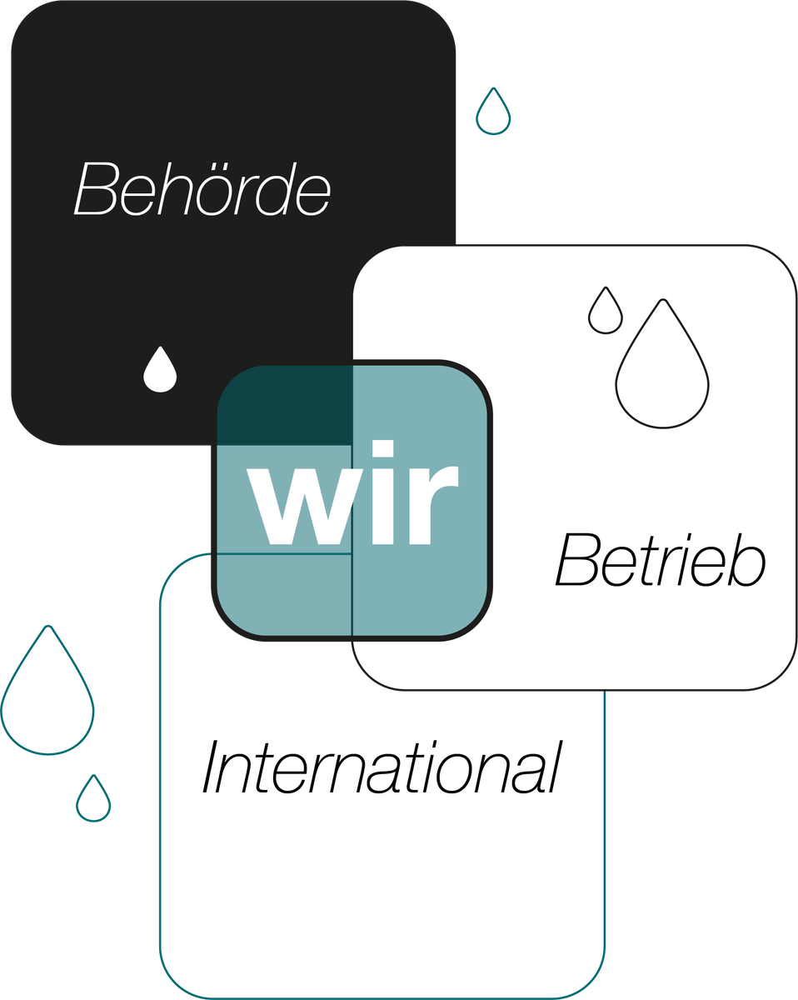
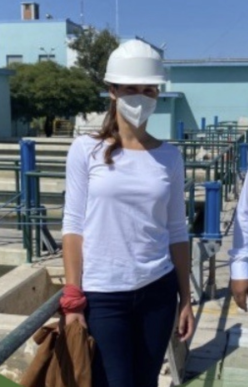

Water engineering · Bavaria · working internationally
Using water
sustainably
Consulting for municipalities, water utilities, companies and project partners — from groundwater protection and climate adaptation through analyses and project support to education and international water consulting.

Six fields, one resource
MH Consulting supports municipalities, water utilities, companies and project partners in developing sustainable, climate-adapted and practicable solutions relating to water as a resource.
-
Groundwater protection & water supply
A secure water supply begins with protecting the resource. I provide support on water management questions, from the initial survey through to the technical assessment.
-
Climate adaptation & sustainable water management
Dry periods, heavy rainfall and rising pressure on use call for a new way of dealing with water. Together we develop measures that use water more efficiently and make systems more resilient.
-
Analyses, technical concepts & assessment
Not every technically possible solution makes sense in the long run. MH Consulting helps to compare different options in a structured way and to arrive at well-founded decisions.
-
Project support, consulting & knowledge transfer
Getting from a good idea to implementation means bringing many parties together. I support projects technically, organisationally and at the interfaces between engineering, administration and operations.
-
Education, workshops & knowledge transfer
Knowledge creates the basis for lasting change. That is why MH Consulting conveys water management and climate topics in a practical, understandable and audience-appropriate way – from the specialist workshop to environmental education.
-
International water consulting & technology transfer
Water management solutions cannot be transferred one to one from one country to another. What matters is whether a technology actually works under the given local conditions and can be operated in the long term.
Selected references
[PLACEHOLDER — add an introductory line once real references are confirmed.]
-
[Reference 1 — e.g. groundwater protection or water supply]
[Two or three sentences: starting point, task, outcome. What was the question, what was done, what came of it?]
- [Figure]
- [Value]
- [Figure]
- [Value]
-
[Reference 2 — e.g. climate adaptation or sustainable water management]
[Two or three sentences: starting point, task, outcome.]
- [Figure]
- [Value]
- [Figure]
- [Value]
-
[Reference 3 — e.g. analysis, technical concept or project support]
[Two or three sentences: starting point, task, outcome.]
- [Figure]
- [Value]
- [Figure]
- [Value]
-
[Reference 4 — e.g. education or international water consulting]
[Two or three sentences: starting point, task, outcome.]
- [Figure]
- [Value]
- [Figure]
- [Value]
[PLACEHOLDER — these are empty templates, not real projects. Replace with actual references and obtain client clearance before publishing. If the section is not needed, it can be removed along with its navigation entry.]
One conversation settles more than three emails.
Thirty minutes, free and without obligation. You describe the project; we say plainly whether and how we can help — and roughly what it would cost.
Rather write directly? consulting_mhuber@gmx.net
Who works here

After ten years spent between a public authority, a municipal utility and international cooperation, one principle holds here: a concept is only worth the data underneath it — and the people who will run it afterwards.
Her route ran from environmental engineering in Braunschweig through a master's in infrastructure and environmental engineering at Chalmers in Gothenburg to three years of technical advice in Peru — and from there back to Bavaria, into the daily operation of a municipal water supply and the permitting practice of a water management authority. That combination of regulatory practice, operational reality and international project work shapes every assignment.
Track record
- since 2023Rosenheim Water Management AuthorityEnvironmental engineering — rivers, permitting, flood protection
- 2022 – 2023Stadtwerke Böhmetal GmbHOperations engineering — supply networks and plant
- 2019 – 2022GIZ GmbH, PeruJunior Advisor — water, sanitation, programme advice
- 2018 – 2019GIZ GmbH, EschbornSuSanA Secretariat — research, project database, proposals
- 2016UMS AG, MunichInstrumentation — automatic soil identification device
Education
- 2016 – 2018Chalmers University of Technology, GothenburgM.Sc. Infrastructure and Environmental Engineering
- 2014 – 2015University of GothenburgExchange studies — environmental sciences and English
- 2012 – 2016TU BraunschweigB.Sc. Environmental Engineering
Languages
- DeutschNative
- EnglishC1 — full professional
- EspañolC1 — full professional
Tell us about your project.
A first 30-minute conversation costs nothing. After it you'll know whether an assignment makes sense — and so will we.
- Phone
- [ADD PHONE NUMBER]
- Office
- [STREET NO.]
[POSTCODE] Rosenheim
Germany - Profile